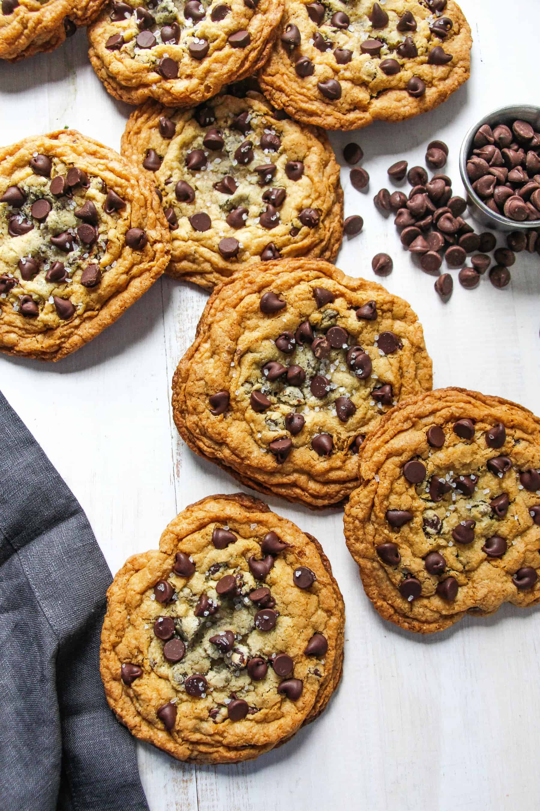

Best Choc Chip Cookies

After dinner, or before, or whenever - Salty and chewy choc chip cookies.
Ingredients
- 226g unsalted butter, melted
- 250g light brown sugar
- 175g granulated sugar
- 300g AP flour
- 1.5 tsp salt
- 1 tsp baking soda
- 2 large eggs
- 2 tsp vanilla extract
- 1.5 cups dark choc chips, divded
- Sea salt flakes, NOT optional
How To
- Preheat the oven to 180ºC. Whisk the flour, salt, and baking soda in a medium bowl. Set aside.
- Whisk brown and white sugar in a large bowl and make sure to break up any large chunks with your fingers if needed. Add the melted butter and whisk vigorously for about 1 minute.
- Whisk in one egg to the sugar-butter mixture at a time, stirring until it’s fully mixed in. Whisk in the second egg and the vanilla and scrape the sides of bowl.
- Add the dry ingredients to the wet and stir with the spatula to fully combine. Stir in 1 cup of the chocolate chips and save the other cup for putting on top after baking.
- Scoop out dough into cookie dough balls. I like to make big cookies so I use 1/4 cup to scoop out the dough. Place on a parchment paper lined baking sheet. Refrigerate dough for at least 15 minutes while the oven heats up.
- Bake the cookie 3 inches apart on a parchment paper lined baking sheet for 10 to 14 minutes. Remove from oven when the edges are set and the cookie is beginning to turn golden brown throughout.
- Top the cookies with flaky sea salt. Let cool on the sheet for 1-2 minutes, then transfer to a wire rack to cool completely.